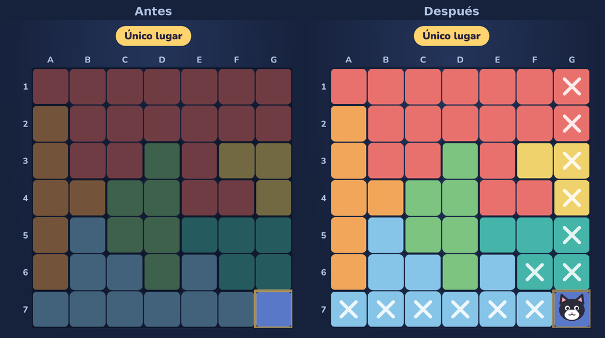
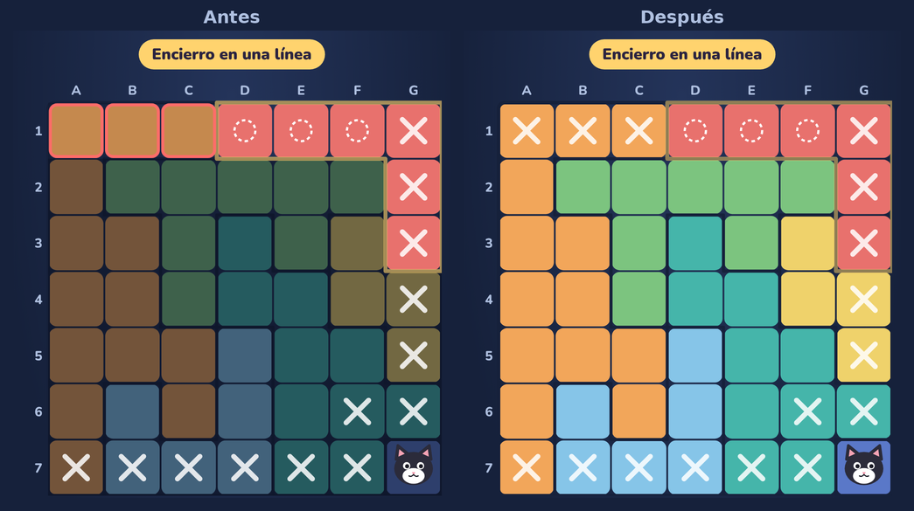
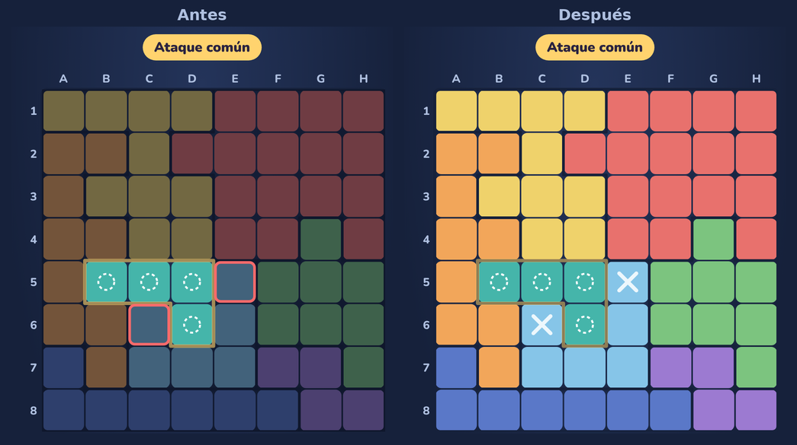
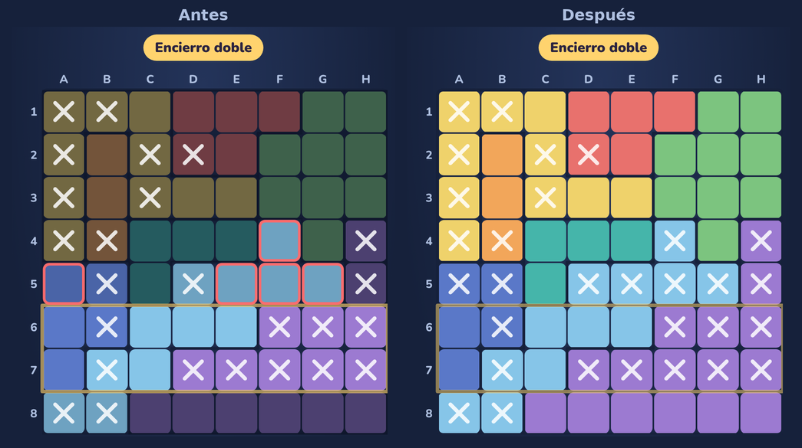
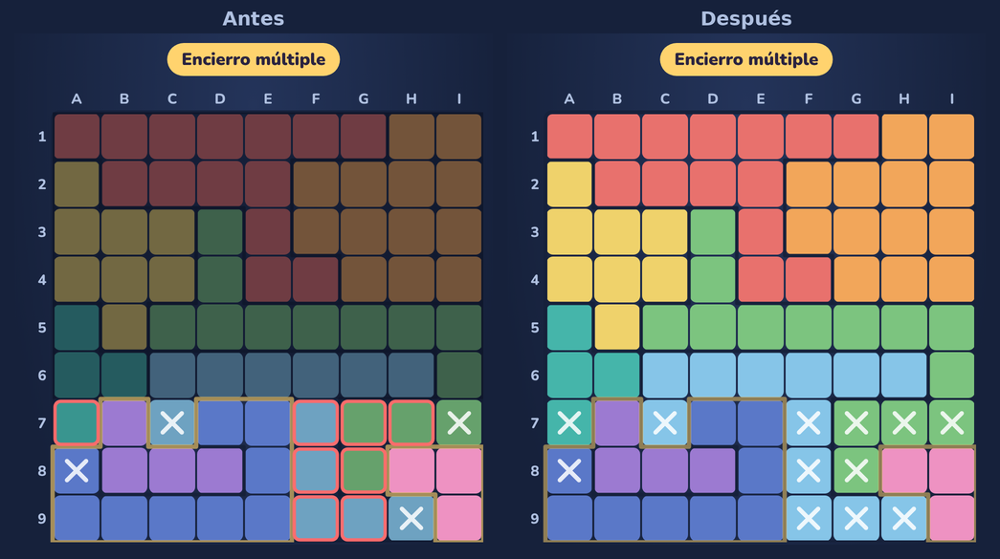
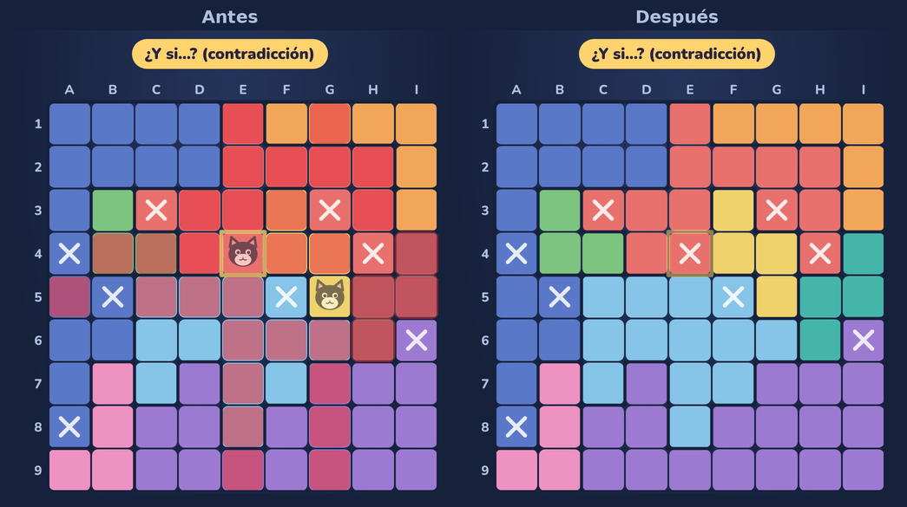
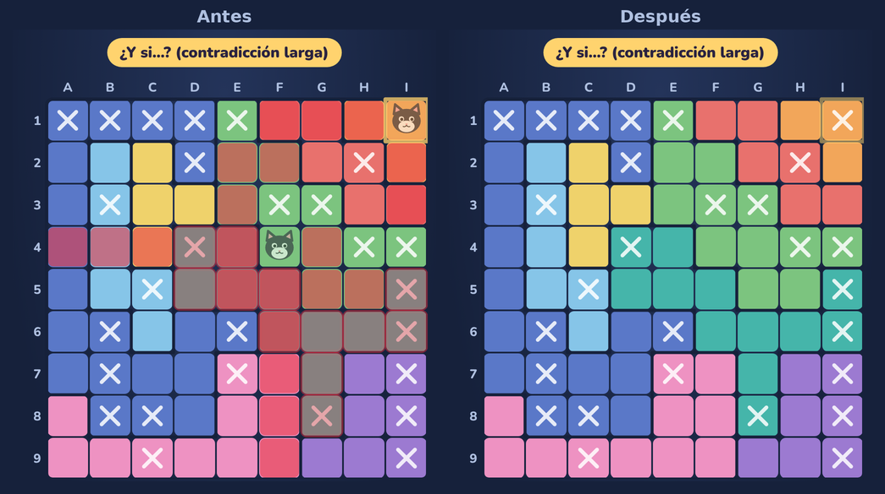

¿Dónde va cada gato?
Videos cortos que resuelven puzzles de lógica explicando el razonamiento, paso a paso. Tableros generados por computadora, resueltos con tácticas humanas.
Episodio 1 ★★
7×7 · Encierro en una línea
Episodio 2 ★★★★
8×8 · Ataque común y encierro doble
Episodio 3 ★★★★★
9×9 · Contradicción
Ver todos los episodios (reel + story) →
Las reglas
Variante de una estrella del Star Battle, también conocida como Queens.
- Un gato por fila
- Un gato por columna
- Un gato por isla
- Los gatos no se tocan, ni en diagonal
La escalera de tácticas
Cada imagen sale de un paso real del solver. Contorno amarillo: el grupo que se analiza. Anillos: sus lugares libres. Borde rojo: lo que se tacha.
1Único lugar
A una isla, fila o columna le queda una sola casilla libre: ahí va el gato.

2Encierro en una línea
Los lugares libres de una isla caen en una misma fila o columna: esa línea es suya y el resto se tacha.

3Ataque común
Si todas las casillas libres de un grupo atacan a una misma casilla, esa casilla se tacha.

4Encierro doble
Dos grupos que solo caben en dos líneas: esas líneas son suyas.

5Encierro múltiple
Lo mismo con tres o más grupos. Fácil de enunciar, difícil de ver.

6¿Y si...? (contradicción)
Suponé un gato: se fuerza otro, y una isla se queda sin lugar. ¡Imposible! Esa casilla se tacha.

7Contradicción larga
Igual, pero para llegar al absurdo hacen falta las tácticas 1 a 5 dentro de la suposición.

Cada gato en su isla... y cada isla con su gato. Michi, michi, miau.